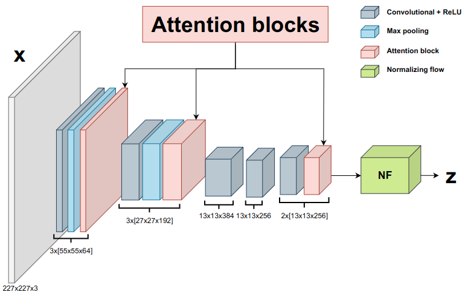

InsPLAD dataset: Grad-CAM activation mapping comparison between DifferNet’s backbone versus AttentDifferNet (SENet)’s backbone.
MVTec AD dataset: Grad-CAM activation mapping comparison between DifferNet’s backbone versus AttentDifferNet (SENet)’s backbone.
Within (semi-)automated visual industrial inspection, learning-based approaches for assessing visual defects, including deep neural networks, enable the processing of otherwise small defect patterns in pixel size on high-resolution imagery. The emergence of these often rarely occurring defect patterns explains the general need for labeled data corpora. To alleviate this issue and advance the current state of the art in unsupervised visual inspection, this work proposes a DifferNet-based solution enhanced with attention modules: AttentDifferNet. It improves image-level detection and classification capabilities on three visual anomaly detection datasets for industrial inspection: InsPLAD-fault, MVTec AD, and Semiconductor Wafer. In comparison to the state of the art, AttentDifferNet achieves improved results, which are, in turn, highlighted throughout our quali-quantitative study. Our quantitative evaluation shows an average improvement – compared to DifferNet – of 1.77 ± 0.25 percentage points in overall AUROC considering all three datasets, reaching SOTA results in InsPLAD-fault, an industrial inspection in-the-wild dataset. As our variants to AttentDifferNet show great prospects in the context of currently investigated approaches, a baseline is formulated, emphasizing the importance of attention for industrial anomaly detection both in the wild and in controlled environments.
AttentDifferNet uses attention modules in its backbone to help it focus on the object to be inspected and ignore irrelevant information (e.g., the background). We show that coupling attention modules, such as SENets and CBAMs, to Unsupervised Anomaly Detection (UAD) methods, can improve their image-level performance in different contexts (in the wild or in controlled scenarios), both qualitatively and quantitatively. Attention modules coupling process differs for each UAD method, as shown in the paper.

@InProceedings{Vieira_2024_WACV,
author = {Vieira e Silva, André Luiz Buarque and Simões, Francisco and Kowerko, Danny and Schlosser, Tobias and Battisti, Felipe and Teichrieb, Veronica},
title = {Attention Modules Improve Image-Level Anomaly Detection for Industrial Inspection: A DifferNet Case Study},
booktitle = {Proceedings of the IEEE/CVF Winter Conference on Applications of Computer Vision (WACV)},
month = {January},
year = {2024},
pages = {(to appear)}
}
@article{doi:10.1080/01431161.2023.2283900,
author = {Vieira e Silva, André Luiz and Felix, Heitor and Simões, Francisco and Teichrieb, Veronica and dos Santos, Michel and Santiago, Hemir and Sgotti, Virgínia and Lott Neto, Henrique},
title = {InsPLAD: A Dataset and Benchmark for Power Line Asset Inspection in UAV Images},
journal = {International Journal of Remote Sensing},
year = {2023},
doi = {10.1080/01431161.2023.2283900},
}